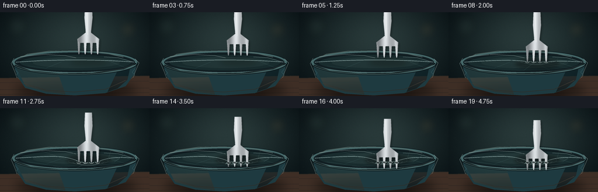
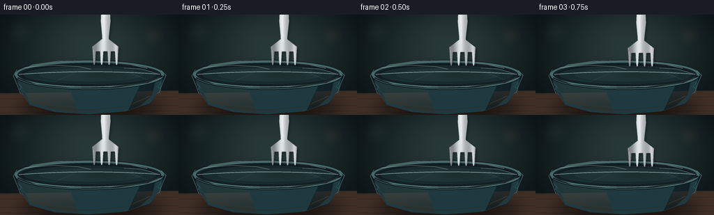
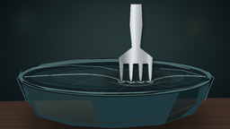
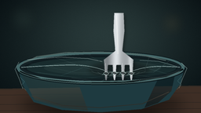
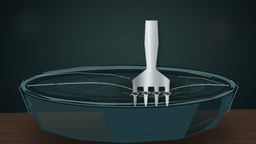

CODING AGENTS AS PIXEL WORLD MODELS
traex/GPT-5.6-Sol · phygen_023
点击播放 · 原生 RGB 像素
逐轮保存的候选
回放视频、检查图与代码变化。
每份候选均可单独播放。实际图片检查记录在下方工具轨迹中。
候选 01播放与检查图
点击播放 · 原生 RGB 像素


展开代码变化
--- 上一保存版本
+++ 本次保存版本
@@ -0,0 +1,337 @@
+from pathlib import Path
+import math
+
+import numpy as np
+from PIL import Image, ImageDraw, ImageFilter
+
+import artifact_io
+
+
+W, H, N = 256, 144, 20
+SS = 4
+RW, RH = W * SS, H * SS
+HERE = Path(__file__).resolve().parent
+
+
+def smoothstep(a, b, x):
+ if a == b:
+ return float(x >= b)
+ x = max(0.0, min(1.0, (x - a) / (b - a)))
+ return x * x * (3.0 - 2.0 * x)
+
+
+def S(v):
+ return int(round(v * SS))
+
+
+def pts(seq):
+ return [(S(x), S(y)) for x, y in seq]
+
+
+def line(draw, seq, fill, width=1, joint="curve"):
+ draw.line(pts(seq), fill=fill, width=max(1, S(width)), joint=joint)
+
+
+def ellipse(draw, box, fill=None, outline=None, width=1):
+ draw.ellipse(tuple(S(v) for v in box), fill=fill, outline=outline,
+ width=max(1, S(width)))
+
+
+def polygon(draw, seq, fill):
+ draw.polygon(pts(seq), fill=fill)
+
+
+def make_background():
+ """A softly lit, close-up kitchen background and wooden counter."""
+ yy, xx = np.mgrid[0:RH, 0:RW]
+ x = xx / SS
+ y = yy / SS
+ # Dark teal kitchen background with a warm pool of light behind the action.
+ glow = np.exp(-(((x - 136) / 102) ** 2 + ((y - 42) / 70) ** 2))
+ vignette = np.clip(((x - 128) / 164) ** 2 + ((y - 69) / 112) ** 2, 0, 1)
+ arr = np.zeros((RH, RW, 3), dtype=np.float32)
+ arr[..., 0] = 17 + 24 * glow - 10 * vignette
+ arr[..., 1] = 29 + 29 * glow - 14 * vignette
+ arr[..., 2] = 31 + 27 * glow - 13 * vignette
+ rng = np.random.default_rng(2307)
+ noise = rng.normal(0, 1.4, (RH, RW, 1))
+ arr += noise
+ im = Image.fromarray(np.uint8(np.clip(arr, 0, 255)), "RGB")
+
+ # Defocused practical lights make the scene feel photographic without
+ # distracting from the contact point.
+ bokeh = Image.new("RGBA", (RW, RH), (0, 0, 0, 0))
+ bd = ImageDraw.Draw(bokeh)
+ for cx, cy, r, col in [
+ (29, 24, 16, (119, 153, 132, 24)),
+ (219, 30, 13, (238, 177, 93, 24)),
+ (202, 58, 7, (166, 203, 184, 16)),
+ (72, 42, 6, (226, 193, 126, 11)),
+ ]:
+ ellipse(bd, (cx-r, cy-r, cx+r, cy+r), fill=col)
+ bokeh = bokeh.filter(ImageFilter.GaussianBlur(S(8)))
+ im = Image.alpha_composite(im.convert("RGBA"), bokeh)
+
+ # Counter, kept low contrast so the glassy plastic remains legible.
+ table = Image.new("RGBA", (RW, RH), (0, 0, 0, 0))
+ td = ImageDraw.Draw(table)
+ polygon(td, [(0, 113), (256, 109), (256, 144), (0, 144)], (62, 46, 37, 255))
+ line(td, [(0, 114), (256, 110)], (120, 86, 59, 85), 1)
+ for y0, alpha in [(121, 18), (133, 15), (141, 10)]:
+ line(td, [(0, y0), (256, y0-3)], (190, 125, 75, alpha), 0.6)
+ # Soft shadow under the bowl.
+ shadow = Image.new("RGBA", (RW, RH), (0, 0, 0, 0))
+ sd = ImageDraw.Draw(shadow)
+ ellipse(sd, (25, 119, 235, 147), fill=(0, 0, 0, 125))
+ shadow = shadow.filter(ImageFilter.GaussianBlur(S(8)))
+ table = Image.alpha_composite(table, shadow)
+ return Image.alpha_composite(im, table)
+
+
+BACKGROUND = make_background()
+
+
+def bowl_layer():
+ layer = Image.new("RGBA", (RW, RH), (0, 0, 0, 0))
+ d = ImageDraw.Draw(layer)
+ # Ceramic vessel body, partially cropped by the counter for macro scale.
+ polygon(d, [(22, 85), (29, 109), (43, 130), (79, 140),
+ (128, 143), (180, 139), (215, 127), (230, 106), (235, 85)],
+ (30, 58, 64, 255))
+ # Body lighting and subtle glaze bands.
+ polygon(d, [(28, 96), (44, 127), (80, 137), (112, 141),
+ (98, 102)], (48, 82, 85, 125))
+ polygon(d, [(205, 94), (224, 89), (218, 116), (201, 131),
+ (184, 137), (199, 105)], (13, 37, 44, 130))
+ line(d, [(40, 122), (79, 134), (127, 137), (181, 132), (215, 117)],
+ (120, 167, 162, 38), 1.0)
+ # Opening and ceramic rim.
+ ellipse(d, (19, 65, 237, 108), fill=(11, 24, 28, 255))
+ ellipse(d, (21, 66, 235, 106), fill=(68, 102, 103, 255))
+ ellipse(d, (25, 69, 231, 103), fill=(9, 21, 25, 255))
+ # Interior glow/reflection gives transparent film something to reveal.
+ ellipse(d, (34, 73, 224, 100), fill=(18, 37, 40, 255))
+ ellipse(d, (56, 77, 205, 96), fill=(27, 49, 50, 190))
+ line(d, [(30, 80), (47, 72), (83, 67), (128, 66), (176, 69), (211, 77)],
+ (180, 210, 198, 85), 1.3)
+ line(d, [(25, 91), (52, 101), (103, 106), (159, 105), (211, 97), (233, 88)],
+ (4, 12, 15, 150), 2.2)
+ return layer
+
+
+BOWL = bowl_layer()
+
+
+def film_geometry(tip_y, puncture):
+ # The film rests at ~83 px through the center. It is initially pulled down
+ # by all four tips, then rebounds a little as holes open around the tines.
+ contact = smoothstep(79.0, 89.0, tip_y)
+ press_depth = max(0.0, min(14.5, (tip_y - 79.0) * 0.82))
+ relaxed = 8.5 + 1.8 * smoothstep(0.0, 1.0, puncture)
+ depth = contact * ((1.0 - puncture) * press_depth + puncture * relaxed)
+
+ def curve(x):
+ base = 82.0 + 0.00036 * (x - 130.0) ** 2
+ broad = depth * math.exp(-((x - 151.0) / 31.0) ** 2)
+ # Four contact dimples remain visible before individual tears form.
+ fine = (1.0 - 0.68 * puncture) * 1.15 * contact * sum(
+ math.exp(-((x - cx) / 4.0) ** 2) for cx in (135.0, 146.0, 157.0, 168.0)
+ )
+ return base + broad + fine
+ return curve, depth, contact
+
+
+def draw_film(im, tip_y, puncture, frame_idx):
+ curve, depth, contact = film_geometry(tip_y, puncture)
+
+ # Transparent skin over the dark opening. Its extremely low-opacity blue
+ # cast and specular streaks are characteristic of taut kitchen wrap.
+ film = Image.new("RGBA", (RW, RH), (0, 0, 0, 0))
+ d = ImageDraw.Draw(film)
+ ellipse(d, (24, 68, 232, 104), fill=(169, 213, 213, 17))
+ ellipse(d, (30, 71, 226, 101), fill=(225, 244, 239, 7))
+
+ # A cross-section highlight follows the changing dimple.
+ xs = np.linspace(27, 229, 180)
+ ridge = [(float(x), curve(float(x))) for x in xs]
+ line(d, ridge, (216, 241, 237, 158), 0.8)
+ line(d, [(x, y-0.85) for x, y in ridge], (119, 180, 184, 58), 0.55)
+
+ # Long stretched reflections across the sheet.
+ line(d, [(35, 76), (75, 72.5), (112, 74.5), (130, 78.2)],
+ (241, 252, 246, 117), 0.72)
+ line(d, [(178, 76.8), (202, 78.0), (225, 84.5)],
+ (223, 247, 242, 105), 0.65)
+ line(d, [(48, 92), (78, 96), (105, curve(105)+3)],
+ (138, 205, 205, 56), 0.55)
+ line(d, [(190, curve(190)+2), (213, 94), (229, 90)],
+ (167, 221, 217, 58), 0.55)
+
+ if contact > 0.01:
+ cy = 82 + depth
+ # Tension rays converge toward the indentation. Uneven alpha and
+ # widths stop them looking like a diagram.
+ anchors = [(32, 79), (45, 92), (67, 72), (91, 99), (113, 70),
+ (190, 72), (215, 78), (226, 92), (203, 98), (179, 101)]
+ for j, (ax, ay) in enumerate(anchors):
+ tx = 151 + (-4 if j % 3 == 0 else (4 if j % 3 == 1 else 0))
+ ty = cy + (j % 2) * 0.8
+ a = int((31 + (j % 4) * 8) * contact)
+ line(d, [(ax, ay), ((ax+tx)*0.54, (ay+ty)*0.54), (tx, ty)],
+ (196, 234, 230, a), 0.38 + 0.10*(j % 2))
+ # Compressed arcs around the bottom of the dimple.
+ for k in range(3):
+ rx = 19 + k * 8
+ yoff = cy - k * 1.8
+ arcbox = (151-rx, yoff-4-k, 151+rx, yoff+5+k)
+ d.arc(tuple(S(v) for v in arcbox), 8, 174,
+ fill=(210, 240, 235, int((83-17*k)*contact)), width=max(1, S(0.55)))
+
+ # Wrap folded over the left/right lip and clinging down the ceramic.
+ line(d, [(24, 79), (19, 88), (25, 102), (29, 113)],
+ (209, 238, 232, 100), 0.7)
+ line(d, [(231, 80), (238, 87), (232, 101), (228, 112)],
+ (212, 239, 233, 95), 0.7)
+ line(d, [(25, 98), (31, 104), (27, 109), (33, 115)],
+ (142, 202, 199, 62), 0.45)
+ line(d, [(231, 97), (226, 103), (231, 108), (225, 114)],
+ (145, 205, 201, 59), 0.45)
+
+ im = Image.alpha_composite(im, film)
+ return im, curve, depth, contact
+
+
+def fork_mask_and_color(dy):
+ """Render a dimensional stainless-steel fork to an RGBA layer."""
+ mask = Image.new("L", (RW, RH), 0)
+ m = ImageDraw.Draw(mask)
+ # Handle and neck. The handle leaves the top of the macro frame.
+ polygon(m, [(145.4, -10+dy), (157.3, -10+dy), (158.2, 13+dy),
+ (155.7, 36+dy), (155.3, 46+dy), (147.0, 46+dy),
+ (146.5, 34+dy), (144.5, 13+dy)], 255)
+ # Broad fork shoulder, with four separate, tapered tines below.
+ polygon(m, [(147.0, 38+dy), (155.0, 38+dy), (169.7, 49.5+dy),
+ (169.0, 56+dy), (133.0, 56+dy), (132.2, 49.5+dy)], 255)
+ centers = [135.0, 145.7, 156.4, 167.1]
+ for cx in centers:
+ polygon(m, [(cx-2.5, 51+dy), (cx+2.5, 51+dy),
+ (cx+1.35, 71.5+dy), (cx+0.55, 75.5+dy),
+ (cx-0.55, 75.5+dy), (cx-1.35, 71.5+dy)], 255)
+
+ # Tiny rounding of steel edges, without erasing the tine gaps.
+ mask = mask.filter(ImageFilter.GaussianBlur(S(0.18)))
+ yy, xx = np.mgrid[0:RH, 0:RW]
+ xf = xx / SS
+ # Horizontal polished-metal gradient plus a mild vertical falloff.
+ silver = (155 + 60*np.exp(-((xf-148)/5.5)**2)
+ + 42*np.exp(-((xf-166)/2.8)**2)
+ - 35*np.exp(-((xf-136)/4.5)**2))
+ vertical = 1.0 - 0.08*np.clip(yy/RH, 0, 1)
+ silver *= vertical
+ rgba = np.empty((RH, RW, 4), dtype=np.uint8)
+ rgba[..., 0] = np.clip(silver + 13, 68, 242)
+ rgba[..., 1] = np.clip(silver + 18, 73, 248)
+ rgba[..., 2] = np.clip(silver + 21, 76, 252)
+ rgba[..., 3] = np.asarray(mask)
+ steel = Image.fromarray(rgba, "RGBA")
+
+ # Fine sharp highlight along one side of the polished handle.
+ hi = Image.new("RGBA", (RW, RH), (0, 0, 0, 0))
+ hd = ImageDraw.Draw(hi)
+ line(hd, [(148.3, -7+dy), (149.2, 13+dy), (150.0, 34+dy), (150.0, 42+dy)],
+ (255, 255, 249, 145), 0.65)
+ for cx in centers:
+ line(hd, [(cx-0.7, 54+dy), (cx-0.15, 70.5+dy)],
+ (250, 255, 250, 120), 0.48)
+ steel = Image.alpha_composite(steel, hi)
+ return steel, mask, centers
+
+
+def render_frame(i):
+ p = i / (N - 1)
+ # Ease-in movement conveys a deliberate, steadily increasing press.
+ motion = p*p*(3-2*p)
+ dy = -3.5 + 34.0 * motion
+ tip_y = 75.5 + dy
+ puncture = smoothstep(0.56, 0.78, p)
+
+ im = Image.alpha_composite(BACKGROUND.copy(), BOWL)
+
+ # Fork's soft reflection/shadow is visible beneath transparent wrap.
+ sh = Image.new("RGBA", (RW, RH), (0, 0, 0, 0))
+ sd = ImageDraw.Draw(sh)
+ contact_shadow = smoothstep(74, 88, tip_y)
+ ellipse(sd, (120-7*contact_shadow, 78, 184+7*contact_shadow,
+ 93+7*contact_shadow), fill=(0, 0, 0, int(48+45*contact_shadow)))
+ sh = sh.filter(ImageFilter.GaussianBlur(S(4.3-1.5*contact_shadow)))
+ im = Image.alpha_composite(im, sh)
+
+ im, curve, depth, contact = draw_film(im, tip_y, puncture, i)
+
+ steel, mask, centers = fork_mask_and_color(dy)
+ # Offset cast shadow of the metal on the film.
+ fork_shadow = Image.new("RGBA", (RW, RH), (0, 0, 0, 0))
+ shifted = Image.new("L", (RW, RH), 0)
+ shifted.paste(mask, (S(2.0), S(2.2)))
+ shifted = shifted.filter(ImageFilter.GaussianBlur(S(1.8)))
+ fork_shadow.putalpha(shifted.point(lambda a: int(a*0.30)))
+ im = Image.alpha_composite(im, fork_shadow)
+ im = Image.alpha_composite(im, steel)
+
+ # Contact details sit over the steel: stretched membrane collars, then
+ # ragged dark punctures that widen gradually around each passing tine.
+ details = Image.new("RGBA", (RW, RH), (0, 0, 0, 0))
+ dd = ImageDraw.Draw(details)
+ if contact > 0.06:
+ local_y = curve(151)
+ for j, cx in enumerate(centers):
+ c_y = min(tip_y-0.4, local_y + 0.3 + 0.45*abs(j-1.5))
+ if puncture < 0.18:
+ # Film bows tightly over each blunt tine tip before rupture.
+ dd.arc((S(cx-3.7), S(c_y-2.0), S(cx+3.7), S(c_y+2.4)),
+ 7, 174, fill=(245, 255, 248, int(165*contact)), width=S(0.65))
+ if puncture > 0.02:
+ q = smoothstep(0.02, 0.92, puncture)
+ rx = 1.7 + 1.55*q
+ ry = 0.8 + 1.2*q
+ ellipse(dd, (cx-rx, c_y-ry, cx+rx, c_y+ry),
+ fill=(5, 12, 14, int(178*q)),
+ outline=(221, 246, 239, int(205*q)), width=0.45)
+ # Two small triangular tear flaps catch the light.
+ polygon(dd, [(cx-rx, c_y), (cx-rx-2.4*q, c_y+2.0*q),
+ (cx-0.5, c_y+0.8*q)],
+ (194, 232, 228, int(100*q)))
+ polygon(dd, [(cx+rx, c_y), (cx+rx+1.8*q, c_y-1.5*q),
+ (cx+0.7, c_y-0.5*q)],
+ (231, 249, 244, int(116*q)))
+ # A very fine bright bridge remains between adjacent holes.
+ if puncture > 0.12:
+ line(dd, [(138, local_y), (142.5, local_y-0.5)],
+ (236, 252, 247, int(120*puncture)), 0.4)
+ line(dd, [(149, local_y+0.2), (153.2, local_y-0.4)],
+ (236, 252, 247, int(110*puncture)), 0.4)
+ line(dd, [(160, local_y+0.2), (164, local_y-0.4)],
+ (236, 252, 247, int(105*puncture)), 0.4)
+ im = Image.alpha_composite(im, details)
+
+ # Front rim highlight, selectively redrawn to place the vessel in front of
+ # the deepest tine tips late in the press.
+ foreground = Image.new("RGBA", (RW, RH), (0, 0, 0, 0))
+ fd = ImageDraw.Draw(foreground)
+ fd.arc((S(21), S(66), S(235), S(107)), 10, 170,
+ fill=(117, 157, 154, 125), width=S(1.2))
+ fd.arc((S(25), S(70), S(231), S(104)), 13, 167,
+ fill=(202, 228, 219, 48), width=S(0.65))
+ im = Image.alpha_composite(im, foreground)
+
+ out = im.convert("RGB").resize((W, H), Image.Resampling.LANCZOS)
+ return np.asarray(out, dtype=np.uint8)
+
+
+def main():
+ frames = np.stack([render_frame(i) for i in range(N)], axis=0)
+ artifact_io.save(frames, HERE)
+
+
+if __name__ == "__main__":
+ main()
可观测工具轨迹
实际执行的命令与返回图片。
命令 1exit 0
/bin/bash -lc "cat prompt.txt && printf '\\n---RULES---\\n' && cat GENERATION_RULES.md && printf '\\n---SPEC---\\n' && cat task_spec.json"
命令 2exit 1
/bin/bash -lc "find . -maxdepth 2 -type f -printf '%p\\n' | sort && printf '\\nTOOLS\\n' && command -v ffmpeg && command -v python3 && python3 - <<'PY' mods=['PIL','numpy','cv2','imageio','moviepy','cairo','moderngl'] for m in mods: try: x=__import__(m); print(m,'OK',getattr(x,'__version__','')) except Exception as e: print(m,'NO',e) PY"
命令 3exit 0
/bin/bash -lc 'cat artifact_io.py'
命令 4exit 0
/bin/bash -lc "set +e; command -v ffmpeg; command -v convert; command -v montage; python3 - <<'PY' mods=['PIL','numpy','cv2','imageio','moviepy'] for m in mods: try: x=__import__(m); print(m,'OK',getattr(x,'__version__','')) except Exception as e: print(m,'NO',repr(e)) PY"
命令 5exit 1
/bin/bash -lc 'python3 generate.py'
命令 6exit 0
/bin/bash -lc "python3 generate.py && python3 - <<'PY'
import numpy as np
x=np.load('pixels.npz')['pixels']
print('packed',x.shape,x.dtype,'frames differ',[(x[:,:,i]"'!=x[:,:,i-1]).sum() for i in range(1,20)])
PY'视觉工具实际返回图片 1

视觉工具实际返回图片 2

视觉工具实际返回图片 3

视觉工具实际返回图片 4

保存候选 1 份；完成命令 6 次；可验证图片返回 4 张。原始 API 响应与完整日志保留在本地。